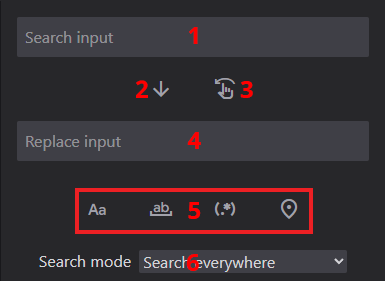
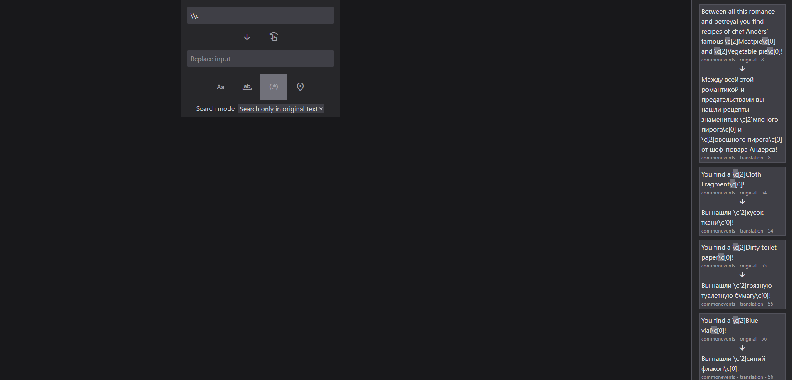
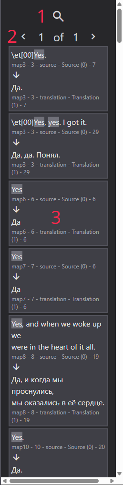

Search guide
Once you've clicked the search button, the search window will be opened. Let's break up it's functionality.
Search window layout
.
- The search input
- Replace button: replaces all occurences of the text in the search input
- Put button: puts the text to the translation field of the source text that matches the text in the search input.
- The replace input
- Search pattern buttons, from left to right: Case-sensitive search (Alt + C), search whole words (Alt + W), regex search (Alt + R), search only in the currently opened tab (Alt + L)
- Search mode: whether to search only in original or only in translation text
Both search and replace input are multi-line.
Note: Put button matches source text as a whole, not by line like in Translator++.
Search implementation
You probably won't encounter memory leaks or performance issues with search, as the number of search entries, loaded in memory in a single moment is limited to 1000.
This is done via splitting search entries to multiple files, with first of them being displayed at the end of the search when displaying the search results.
Regex implementation
Honestly, you can just fucking open Visual Studio Code and other shit to make sure you can revert all the damage you did with your shitty regexes, if you want to use them.
But if you want to use regex in the program, here's a quick breakdown:
- The program uses JavaScript implementation of regex. It's not as cool as Perl's, but it is, for example, used in VSCode.
- The program fully probably supports unicode in regex.
- I didn't really think of implementing the substitutions in the program (ones that's annotated with $), so please DON'T use substitutions in replace input, as it will replace LITERALLY.
To summarize: regex search works flawlessly, but there's no substitutions.
Here's a simple example of searching for \c pattern in text: 
Search results panel layout

- Switch between search and log mode
- The number of matches pages
- Matched text and its metadata
- Matched text's counterpart and its metadata
Pro tip: upon LMB click on the search result, the program will zoom to text's location. Upon RMB click, matched text will be replaced by the text entered to the replace input.